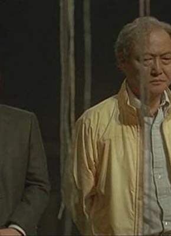

#3361 The Ramen Girl

 IMDB-Wertung: 6.3 / 10
IMDB-Wertung: 6.3 / 10  Metascore: 0
Metascore: 0 
Um bei ihrem Freund Ethan in Tokio zu leben, bricht die verwöhnte Abby alle Zelte in den USA ab. Als sie jedoch in Japan ankommt, zieht Ethan nach Osaka und lässt sie allein zurück. Auf der Suche nach einem neuen Ziel im Leben entdeckt Abby, dass die typische japanische Ramen-Suppe mehr ist, als nur ein schmackhaftes Gericht. Im Restaurant des tyrannischen Ramen-Meisters Maezumi muss sie ganz unten anfangen, um in die japanischen Kochkünste eingeführt zu werden und neues Glück zu finden.
Jahr: 2008
Dauer: 102 Minuten
FSK:
Land: USA Studio: Image EntertainmentTonspuren: DTS - ,
Untertitel:
Auflösung: 1080p (1920x1040) Größe: 5693 MB
Genre: Drama, Komödie, Liebe
Regisseur: Robert Allan Ackerman
Drehbuch: Becca Topol
Soundtrack: Carlo Siliotto
Darsteller:
 Brittany Murphy als Abby
Brittany Murphy als Abby- Soji Arai als Toshi Iwamoto
- Gabriel Mann als Ethan
- Tammy Blanchard als Gretchan
 Kaori Momoi als Mamasan , scenes deleted
Kaori Momoi als Mamasan , scenes deleted- Masayoshi Haneda als Yuki
- Justin Berti als NY Waiter
- Qyoko Kudo als Mother in Metro
- Natsuki Kunimoto als
- Michael Naishtut als N.Y. customer
- Toshiyuki Nishida als Maezumi
- Kimiko Yo als Reiko
- Daniel Evans als Charlie
-  Renji Ishibashi als Udagawa
- Daigo Tanji als Taxi Driver
- Thane Camus als Wilson
- Hako Ueno als Hanako
- Masayuki Maekawa als Vendor
- Yûya Ogawa als College Student
- Tomoyuki Kuramoto als College Student
- Yuta als Young Man at the Shrine
- NaNa als Young Woman at the Shrine
- Shinji Suzuki als Goth Boy at the Shrine
- Kosei Asami als Young Boy
- Ken Toyama als Suzuki
- Jûdai Ikeshita als Depressed Businessman
- Sachiko Matsuura als Secretary
- Tomiko Ishii als Megumi
- Rei Okamoto als Midori
- Nichita Tanabe als Harumi's Colleague
- Ken Maeda als Harumi
- Takaki Uda als Akira
- Takahiro Hirano als Kuma
- Takanobu Kaneko als Udagawa's Son
- Yutaka Oda als Kendo Master
- Sonha Chô als Ueno
- Man Kato als Manager
- Kazuya Takahashi als Male Singer
- Takako Ogasawara als Elf #1
- Mai Ishikawa als Elf #2
- Akiko Monô als Mio
- Masayoshi Nogami als Merchant 1
- Hideki Kurauchi als Merchant 2
- Shû Nakajima als Merchant 3
- Ruru Furuya als Twin Babies - Emiko , as Mimi Furuya
- Mimi Furuya als Twin Babies - Aiko , as Mimi Furuya
- Naoki Saitô als Kenichi , scenes deleted
- Hisako Ôkata als Maezumi's Mother
- Tsutomu Yamazaki als Grand Master
- Haruki Kobayashi als Jin
Datei: X:\2008(N-Z)\Ramen Girl, The (2008, FSK, 1920x1040).mkv seit 24.03.2016
Festplatte: HD 2008(G-Z)-2009(A-F)
 Es gibt insgesamt 91 Filme in der Gruppe '2008(N-Z)'
Es gibt insgesamt 91 Filme in der Gruppe '2008(N-Z)'